Implementacion#
Librerias#
import numpy as np
import pandas as pd
import matplotlib.pyplot as plt
import seaborn as sns
from scipy.stats import mannwhitneyu, chi2_contingency,shapiro, spearmanr, pearsonr,f_oneway, kruskal,kstest,normaltest,ks_2samp,ttest_ind
from sklearn.impute import SimpleImputer,KNNImputer
from sklearn.linear_model import LinearRegression
import itertools
import warnings
warnings.filterwarnings("ignore")
Cargado de datos#
df=pd.read_csv('base_imputacion_mixta_1000.csv',sep=',',header=0,encoding='utf-8')
df.head()
| fecha | sexo | ciudad | nivel_educativo | segmento | estado_civil | edad | altura_cm | ingresos | gasto_mensual | puntuacion_credito | demanda | |
|---|---|---|---|---|---|---|---|---|---|---|---|---|
| 0 | 2024-01-01 | F | Medellín | NaN | B | Unión libre | 19.0 | 161.821754 | 3574.753806 | 1832.731832 | 640.465372 | 119.202995 |
| 1 | 2024-01-02 | F | Barranquilla | NaN | B | NaN | 52.0 | 167.819566 | 3163.626815 | NaN | 533.108430 | 124.457874 |
| 2 | 2024-01-03 | M | Bogotá | Secundaria | B | Soltero/a | 38.0 | 165.756219 | 2765.672259 | 1219.535074 | 491.016910 | NaN |
| 3 | 2024-01-04 | F | Bogotá | NaN | B | Casado/a | 57.0 | 160.642670 | 4320.397345 | 1908.324816 | NaN | 129.426792 |
| 4 | 2024-01-05 | M | Cali | Técnico | B | Soltero/a | 67.0 | 151.402909 | NaN | 1887.385697 | 610.213994 | 133.916319 |
Funciones#
def Summary(data, sheet):
print(f"Hoja: {sheet}")
resumen = {
"Cantidad de filas": data.shape[0],
"Cantidad de columnas": data.shape[1],
"Datos faltantes": data.isnull().sum().sum(),
"Filas duplicadas": data.duplicated().sum()
}
ResumenHoja = pd.DataFrame(resumen, index=["Resumen"])
print("\nResumen:")
display(ResumenHoja)
print("\nEncabezado:")
display(data.head())
def graficar_numericas(df):
numericas = df.select_dtypes(include=['int64', 'float64', 'int32', 'float32']).columns
if len(numericas) == 0:
print("No se detectaron variables numéricas en el DataFrame.")
return
for col in numericas:
plt.figure(figsize=(12,4))
plt.subplot(1,2,1)
df[col].hist(bins=20, color="gold", edgecolor="black")
plt.title(f"Histograma de {col}")
plt.xlabel(col)
plt.ylabel("Frecuencia")
plt.subplot(1,2,2)
plt.boxplot(df[col].dropna(), vert=False, patch_artist=True,
boxprops=dict(facecolor="lightgreen", color="black"),
medianprops=dict(color="red"))
plt.title(f"Boxplot de {col}")
plt.xlabel(col)
plt.tight_layout()
plt.show()
def graficar_categoricas(df,categoricas):
for cat in categoricas:
print(df[cat].value_counts())
sns.countplot(data=df, x=cat, order=df[cat].value_counts().index)
plt.title(f'Distribución de {cat}')
plt.xticks(rotation=45)
plt.show()
def analisis_bivariado_todas_numericas(df):
numericas = df.select_dtypes(include=['int64', 'float64']).columns
for var1, var2 in itertools.combinations(numericas, 2):
print("="*60)
print(f"Análisis entre: {var1} y {var2}")
plt.figure(figsize=(6,4))
sns.regplot(data=df, x=var1, y=var2, scatter_kws={"alpha":0.5})
plt.title(f"Relación entre {var1} y {var2}")
plt.show()
p1 = shapiro(df[var1].dropna())[1]
p2 = shapiro(df[var2].dropna())[1]
normal1 = p1 > 0.05
normal2 = p2 > 0.05
print(f"Shapiro {var1}: p={p1:.4f} -> {'Normal' if normal1 else 'No normal'}")
print(f"Shapiro {var2}: p={p2:.4f} -> {'Normal' if normal2 else 'No normal'}")
df_temp = df[[var1, var2]].dropna()
if normal1 and normal2:
corr, p = pearsonr(df_temp[var1], df_temp[var2])
metodo = "Pearson"
else:
corr, p = spearmanr(df_temp[var1], df_temp[var2])
metodo = "Spearman"
print(f"Correlación ({metodo}): {corr:.4f} (p-value={p:.4f})\n")
def cramers_v(confusion_matrix):
chi2 = chi2_contingency(confusion_matrix)[0]
n = confusion_matrix.sum().sum()
phi2 = chi2 / n
r, k = confusion_matrix.shape
return np.sqrt(phi2 / min(k-1, r-1))
def cramers_v_imp(ct):
chi2, _, _, _ = chi2_contingency(ct, correction=False)
n = ct.to_numpy().sum()
k = min(ct.shape)-1
return np.sqrt(chi2 / (n * k)) if n > 0 and k > 0 else np.nan
def analisis_bivariado_categoricas(df):
categoricas = df.select_dtypes(include=['object', 'category']).columns
for var1, var2 in itertools.combinations(categoricas, 2):
print("="*70)
print(f"Análisis entre: {var1} y {var2}")
tabla = pd.crosstab(df[var1], df[var2])
print("\nTabla de contingencia:")
print(tabla)
plt.figure(figsize=(6,4))
sns.heatmap(tabla, annot=True, fmt="d", cmap="Blues")
plt.title(f"Heatmap: {var1} vs {var2}")
plt.show()
chi2, p, dof, expected = chi2_contingency(tabla)
print(f"\nChi-cuadrado: {chi2:.4f}, p-value={p:.4f}, grados libertad={dof}")
cv = cramers_v(tabla)
print(f"Cramer's V: {cv:.4f}\n")
def matriz_spearman(df):
numericas = df.select_dtypes(include=['int64','float64'])
corr_spearman = numericas.corr(method="spearman")
plt.figure(figsize=(8,6))
sns.heatmap(corr_spearman, annot=True, cmap="coolwarm", center=0)
plt.title("Matriz de correlación (Spearman)")
plt.show()
def bivariado_cat_num_all(df, plot=True):
categoricas = df.select_dtypes(include=["object", "category"]).columns
numericas = df.select_dtypes(include=["int64", "float64"]).columns
resultados = []
for cat_col in categoricas:
for num_col in numericas:
print(f"\n=== Análisis entre {cat_col} (categórica) y {num_col} (numérica) ===\n")
resumen = df.groupby(cat_col)[num_col].describe()
normalidad = {}
for categoria in df[cat_col].dropna().unique():
datos = df[df[cat_col] == categoria][num_col].dropna()
if len(datos) > 3:
stat, p = shapiro(datos)
normalidad[categoria] = p > 0.05
else:
normalidad[categoria] = None
grupos = [df[df[cat_col] == cat][num_col].dropna() for cat in df[cat_col].dropna().unique()]
if all(val == True for val in normalidad.values() if val is not None):
stat, p = f_oneway(*grupos)
prueba = "ANOVA"
else:
stat, p = kruskal(*grupos)
prueba = "Kruskal-Wallis"
resultados.append({
"Categorica": cat_col,
"Numerica": num_col,
"Prueba": prueba,
"Estadístico": stat,
"p-value": p
})
if plot:
plt.figure(figsize=(8,5))
sns.boxplot(x=cat_col, y=num_col, data=df, palette="Set3")
plt.title(f"{num_col} por {cat_col}")
plt.xticks(rotation=30)
plt.show()
return pd.DataFrame(resultados)
def prueba_normalidad(df, alpha=0.05):
resultados = []
numericas = df.select_dtypes(include=[np.number]).columns
for col in numericas:
serie = df[col].dropna()
if len(serie) < 8: # muy pocas muestras → no confiable
resultados.append({
"variable": col,
"n_muestras": len(serie),
"shapiro_p": np.nan,
"dagostino_p": np.nan,
"ks_p": np.nan,
"es_normal (alpha=0.05)": "Muestra insuficiente"
})
continue
# Shapiro-Wilk (solo si n <= 5000, más grande no recomendado)
stat_shapiro, p_shapiro = shapiro(serie) if len(serie) <= 5000 else (np.nan, np.nan)
# D’Agostino y Pearson
stat_dagostino, p_dagostino = normaltest(serie)
# Kolmogorov-Smirnov contra normal estándar
stat_ks, p_ks = kstest(
(serie - serie.mean()) / serie.std(ddof=0), 'norm'
)
# Veredicto final
es_normal = (
(np.isnan(p_shapiro) or p_shapiro > alpha) and
(p_dagostino > alpha) and
(p_ks > alpha)
)
resultados.append({
"variable": col,
"n_muestras": len(serie),
"shapiro_p": p_shapiro,
"dagostino_p": p_dagostino,
"ks_p": p_ks,
"es_normal (alpha=0.05)": es_normal
})
return pd.DataFrame(resultados).sort_values(by="es_normal (alpha=0.05)", ascending=False)
def comparar_histogramas(df_original, df_imputado, var, metodo, bins=10):
plt.figure(figsize=(8,5))
plt.hist(df_original[var].dropna(), bins=bins, alpha=0.6, label=f"{var} original", color="black")
plt.hist(df_imputado[var], bins=bins, alpha=0.6, label=f"{var} imputada ({metodo})")
plt.title(f"{var}: Original vs Imputada ({metodo})")
plt.xlabel(var)
plt.ylabel("Frecuencia")
plt.legend()
plt.show()
def comparar_boxplots(df_original, df_imputado, var, metodo):
plt.figure(figsize=(8,5))
data = [
df_original[var].dropna(),
df_imputado[var]
]
plt.boxplot(data, labels=[f"{var} original", f"{var} imputada ({metodo})"])
plt.title(f"{var}: Original vs Imputada ({metodo})")
plt.ylabel(var)
plt.grid(axis="y", linestyle="--", alpha=0.7)
plt.show()
def hot_deck_group(df, col, group, random_state=0):
rng = np.random.default_rng(random_state)
out = df[col].copy()
for g, sub in df.groupby(group):
pool = sub[col].dropna().to_numpy()
idx = sub.index[sub[col].isna()]
if pool.size > 0 and len(idx) > 0:
out.loc[idx] = rng.choice(pool, size=len(idx), replace=True)
return out
Analisis Exploratorio de los datos#
se analizara el dataset de manera exhaustiva antes de realizar alguna imputacion
revisamos primero la forma del dataset mediante la funcion Summary
Summary(df,'df')
Hoja: df
Resumen:
| Cantidad de filas | Cantidad de columnas | Datos faltantes | Filas duplicadas | |
|---|---|---|---|---|
| Resumen | 1000 | 12 | 1850 | 0 |
Encabezado:
| fecha | sexo | ciudad | nivel_educativo | segmento | estado_civil | edad | altura_cm | ingresos | gasto_mensual | puntuacion_credito | demanda | |
|---|---|---|---|---|---|---|---|---|---|---|---|---|
| 0 | 2024-01-01 | F | Medellín | NaN | B | Unión libre | 19.0 | 161.821754 | 3574.753806 | 1832.731832 | 640.465372 | 119.202995 |
| 1 | 2024-01-02 | F | Barranquilla | NaN | B | NaN | 52.0 | 167.819566 | 3163.626815 | NaN | 533.108430 | 124.457874 |
| 2 | 2024-01-03 | M | Bogotá | Secundaria | B | Soltero/a | 38.0 | 165.756219 | 2765.672259 | 1219.535074 | 491.016910 | NaN |
| 3 | 2024-01-04 | F | Bogotá | NaN | B | Casado/a | 57.0 | 160.642670 | 4320.397345 | 1908.324816 | NaN | 129.426792 |
| 4 | 2024-01-05 | M | Cali | Técnico | B | Soltero/a | 67.0 | 151.402909 | NaN | 1887.385697 | 610.213994 | 133.916319 |
Podemos observar que el dataset tiene 1000 filas, 12 variables y 1850 datos faltantes
df.info()
<class 'pandas.core.frame.DataFrame'>
RangeIndex: 1000 entries, 0 to 999
Data columns (total 12 columns):
# Column Non-Null Count Dtype
--- ------ -------------- -----
0 fecha 1000 non-null object
1 sexo 980 non-null object
2 ciudad 950 non-null object
3 nivel_educativo 900 non-null object
4 segmento 800 non-null object
5 estado_civil 650 non-null object
6 edad 970 non-null float64
7 altura_cm 920 non-null float64
8 ingresos 880 non-null float64
9 gasto_mensual 750 non-null float64
10 puntuacion_credito 500 non-null float64
11 demanda 850 non-null float64
dtypes: float64(6), object(6)
memory usage: 93.9+ KB
Podemos observar que en el dataset hay 6 variables categoricas y 6 variables numericas
realizamos el resumen de las variables numericas mediante describe
df.describe()
| edad | altura_cm | ingresos | gasto_mensual | puntuacion_credito | demanda | |
|---|---|---|---|---|---|---|
| count | 970.000000 | 920.000000 | 880.000000 | 750.000000 | 500.000000 | 850.000000 |
| mean | 42.861856 | 167.760096 | 3681.294745 | 1687.810749 | 599.077500 | 160.305759 |
| std | 14.621382 | 9.275530 | 1079.326096 | 582.070174 | 79.828186 | 25.357794 |
| min | 18.000000 | 140.000000 | 487.662547 | 100.000000 | 373.657944 | 99.875828 |
| 25% | 30.000000 | 161.488768 | 2999.416229 | 1309.239768 | 544.467843 | 139.505538 |
| 50% | 43.000000 | 167.714614 | 3669.620507 | 1676.193764 | 599.692595 | 160.721251 |
| 75% | 55.000000 | 173.999069 | 4375.093656 | 2063.260990 | 653.345068 | 181.100754 |
| max | 69.000000 | 195.766921 | 7016.246936 | 3532.593603 | 823.539585 | 222.093047 |
eliminamos la variable fecha del dataset
df=df.drop(columns='fecha')
Analisis Univariado#
Analisis Numerico#
realizamos el analisis univariado de las variables del dataset empezando por las variables numericas
graficar_numericas(df)
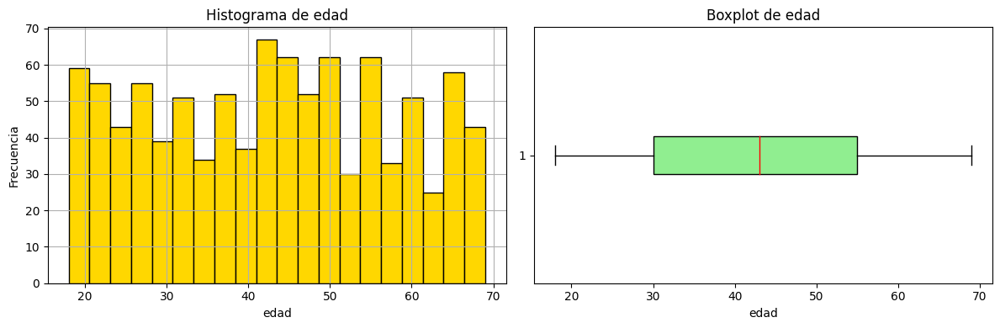
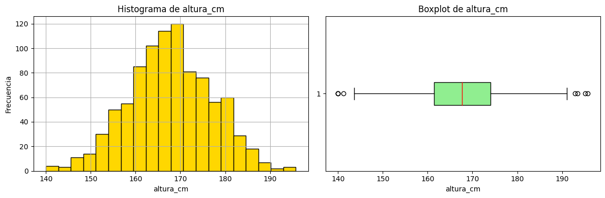
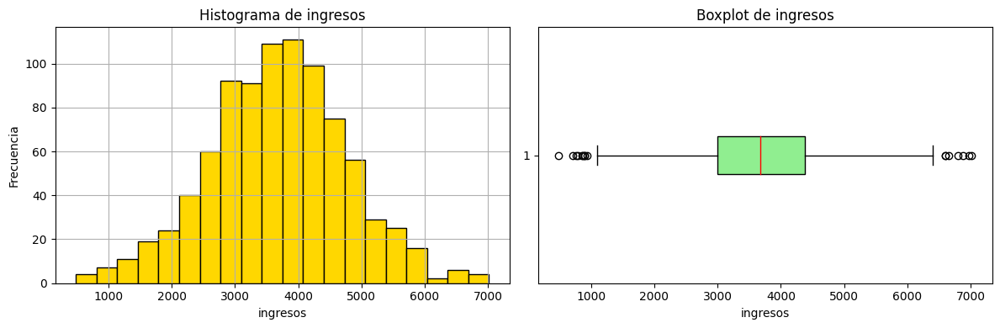
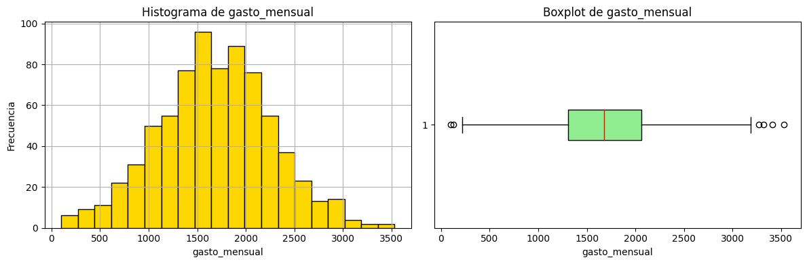
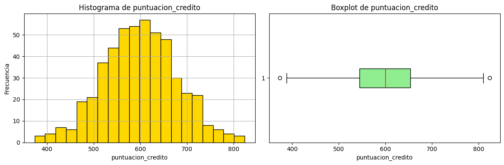
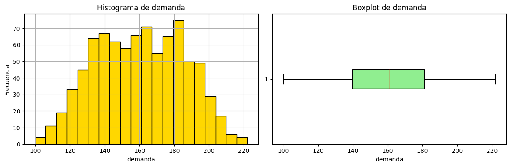
Podemos observar que las variables de ingresos,altura_cm,gasto mensual y puntuacion de credito tienen outliers visibles. Aunque no se alejan de posibles valores reales.
Tambien se observa que el histograma de edad y el histograma de demanda son los unicos que no asemejan a una distribucion normal
Analisis categorico#
como la variable fecha va a tener valores diferentes siempre debido a que es diaria no se tomara en cuenta para el analisis categorico
categoricas=['sexo','ciudad','nivel_educativo','segmento','estado_civil']
graficar_categoricas(df,categoricas)
sexo
F 518
M 462
Name: count, dtype: int64
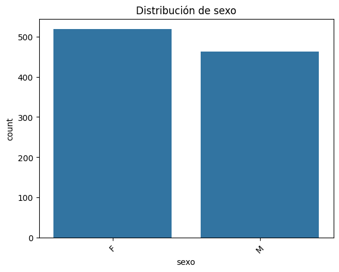
ciudad
Bogotá 307
Medellín 192
Cali 189
Barranquilla 161
Cartagena 101
Name: count, dtype: int64
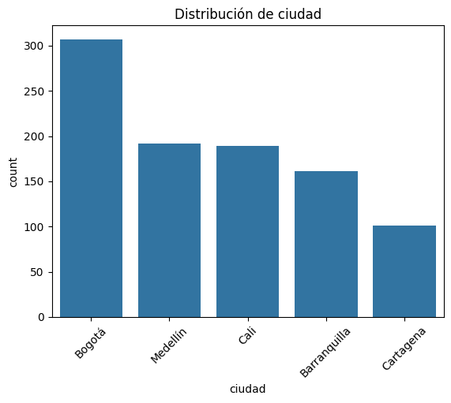
nivel_educativo
Secundaria 317
Universitario 251
Técnico 224
Posgrado 108
Name: count, dtype: int64
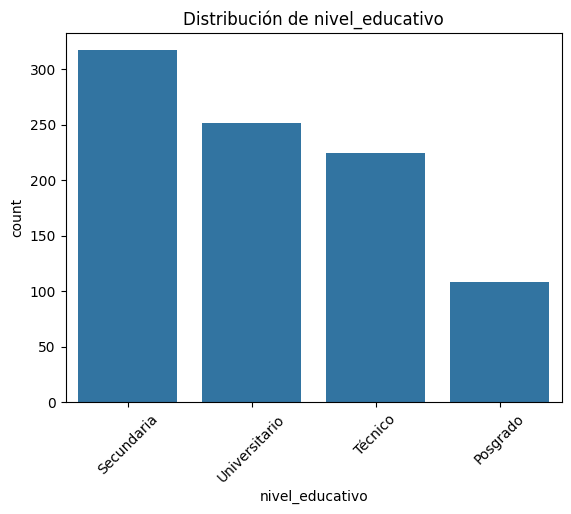
segmento
B 457
A 194
C 149
Name: count, dtype: int64
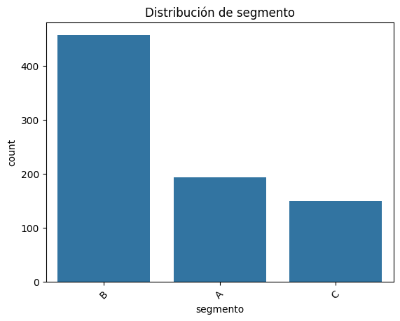
estado_civil
Soltero/a 290
Casado/a 231
Unión libre 93
Divorciado/a 36
Name: count, dtype: int64
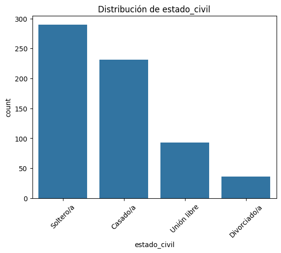
Podemos observar que cada variable tiene pocas categorias en cada una, siendo las ciudades en las que mas tiene con 5. Podemos tambien observar que las observaciones estan bastante igualadas entre mujeres y hombres en el dataset a diferencia de las otras variables en las que una categoria es mas dominante que la otra
Analisis Bivariado#
se realizo un analisis bivariado para determinar las relaciones entre las variables numericas
analisis_bivariado_todas_numericas(df)
============================================================
Análisis entre: edad y altura_cm
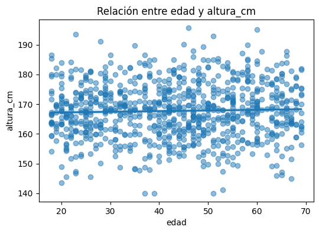
Shapiro edad: p=0.0000 -> No normal
Shapiro altura_cm: p=0.5915 -> Normal
Correlación (Spearman): 0.0344 (p-value=0.3044)
============================================================
Análisis entre: edad y ingresos
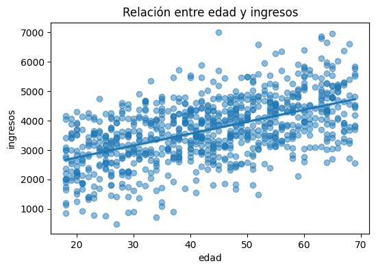
Shapiro edad: p=0.0000 -> No normal
Shapiro ingresos: p=0.3244 -> Normal
Correlación (Spearman): 0.5282 (p-value=0.0000)
============================================================
Análisis entre: edad y gasto_mensual
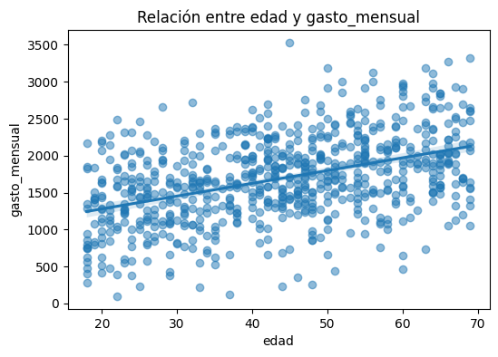
Shapiro edad: p=0.0000 -> No normal
Shapiro gasto_mensual: p=0.6746 -> Normal
Correlación (Spearman): 0.4214 (p-value=0.0000)
============================================================
Análisis entre: edad y puntuacion_credito
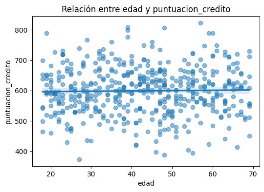
Shapiro edad: p=0.0000 -> No normal
Shapiro puntuacion_credito: p=0.9408 -> Normal
Correlación (Spearman): 0.0236 (p-value=0.6060)
============================================================
Análisis entre: edad y demanda
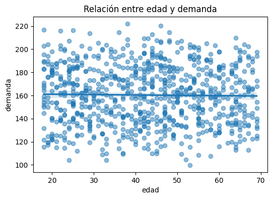
Shapiro edad: p=0.0000 -> No normal
Shapiro demanda: p=0.0000 -> No normal
Correlación (Spearman): -0.0167 (p-value=0.6325)
============================================================
Análisis entre: altura_cm y ingresos
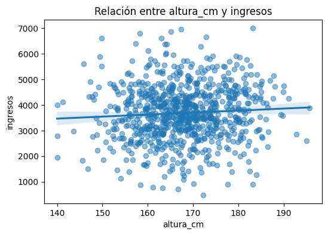
Shapiro altura_cm: p=0.5915 -> Normal
Shapiro ingresos: p=0.3244 -> Normal
Correlación (Pearson): 0.0670 (p-value=0.0564)
============================================================
Análisis entre: altura_cm y gasto_mensual
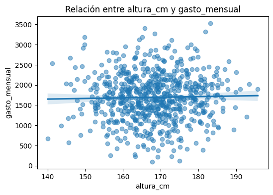
Shapiro altura_cm: p=0.5915 -> Normal
Shapiro gasto_mensual: p=0.6746 -> Normal
Correlación (Pearson): 0.0245 (p-value=0.5185)
============================================================
Análisis entre: altura_cm y puntuacion_credito
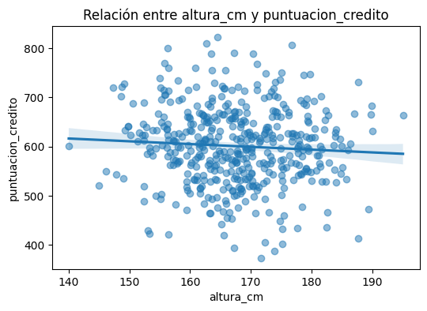
Shapiro altura_cm: p=0.5915 -> Normal
Shapiro puntuacion_credito: p=0.9408 -> Normal
Correlación (Pearson): -0.0659 (p-value=0.1597)
============================================================
Análisis entre: altura_cm y demanda
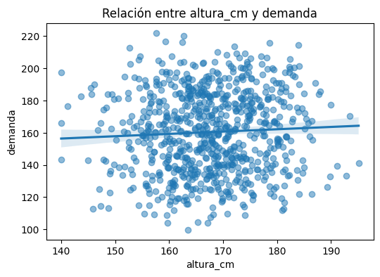
Shapiro altura_cm: p=0.5915 -> Normal
Shapiro demanda: p=0.0000 -> No normal
Correlación (Spearman): 0.0590 (p-value=0.0986)
============================================================
Análisis entre: ingresos y gasto_mensual
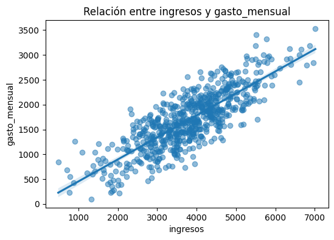
Shapiro ingresos: p=0.3244 -> Normal
Shapiro gasto_mensual: p=0.6746 -> Normal
Correlación (Pearson): 0.8134 (p-value=0.0000)
============================================================
Análisis entre: ingresos y puntuacion_credito
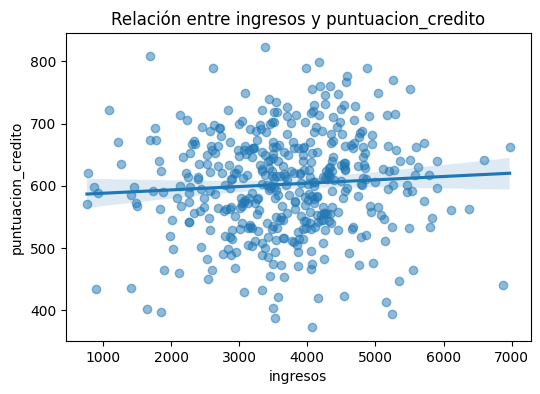
Shapiro ingresos: p=0.3244 -> Normal
Shapiro puntuacion_credito: p=0.9408 -> Normal
Correlación (Pearson): 0.0704 (p-value=0.1440)
============================================================
Análisis entre: ingresos y demanda
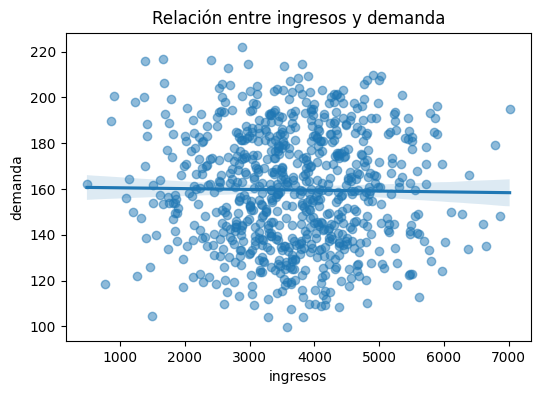
Shapiro ingresos: p=0.3244 -> Normal
Shapiro demanda: p=0.0000 -> No normal
Correlación (Spearman): -0.0073 (p-value=0.8411)
============================================================
Análisis entre: gasto_mensual y puntuacion_credito
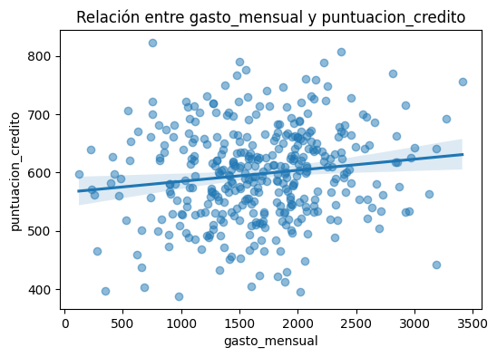
Shapiro gasto_mensual: p=0.6746 -> Normal
Shapiro puntuacion_credito: p=0.9408 -> Normal
Correlación (Pearson): 0.1413 (p-value=0.0061)
============================================================
Análisis entre: gasto_mensual y demanda
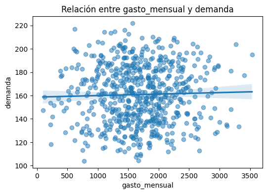
Shapiro gasto_mensual: p=0.6746 -> Normal
Shapiro demanda: p=0.0000 -> No normal
Correlación (Spearman): 0.0200 (p-value=0.6167)
============================================================
Análisis entre: puntuacion_credito y demanda
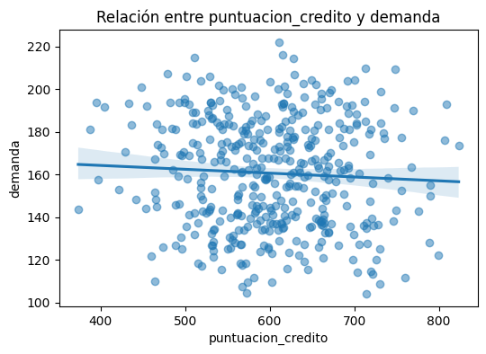
Shapiro puntuacion_credito: p=0.9408 -> Normal
Shapiro demanda: p=0.0000 -> No normal
Correlación (Spearman): -0.0492 (p-value=0.3146)
Podemos observar que las variables mas relacionadas entre si son ingresos y el gasto mensual, siendo las que estan mas relacionadas entre si. La edad tambien se realciona entre estas 2 variables. Por lo que el nucleo de las correlaciones entre las numericas esta en las 3 variables. Las demas variables numericas no muestran correlaciones fuertes entre si
creamos la matriz de correlacion para las variables numericas, como la mayoria de relaciones son de tipo no normal se creara la matriz de correlacion de las variables numericas con spearman
matriz_spearman(df)
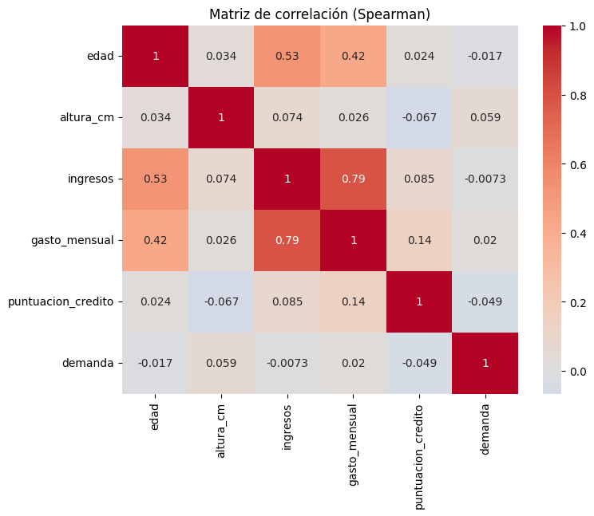
realizamos el analisis bivariado para las variables categoricas
analisis_bivariado_categoricas(df)
======================================================================
Análisis entre: sexo y ciudad
Tabla de contingencia:
ciudad Barranquilla Bogotá Cali Cartagena Medellín
sexo
F 77 159 113 50 95
M 81 143 73 49 91
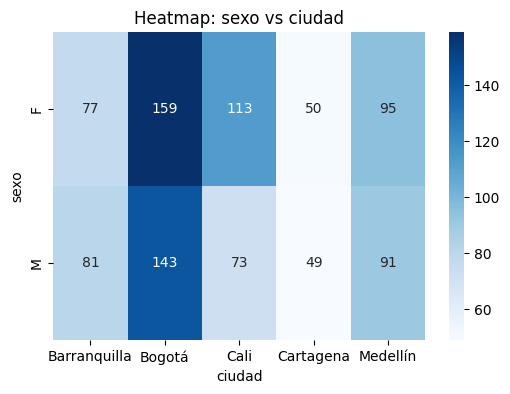
Chi-cuadrado: 6.1806, p-value=0.1861, grados libertad=4
Cramer's V: 0.0815
======================================================================
Análisis entre: sexo y nivel_educativo
Tabla de contingencia:
nivel_educativo Posgrado Secundaria Técnico Universitario
sexo
F 62 153 131 123
M 42 157 89 124
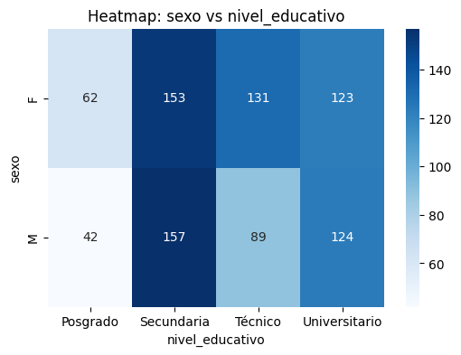
Chi-cuadrado: 8.2667, p-value=0.0408, grados libertad=3
Cramer's V: 0.0969
======================================================================
Análisis entre: sexo y segmento
Tabla de contingencia:
segmento A B C
sexo
F 101 236 80
M 90 212 67
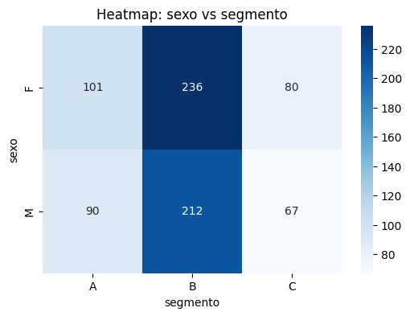
Chi-cuadrado: 0.1381, p-value=0.9333, grados libertad=2
Cramer's V: 0.0133
======================================================================
Análisis entre: sexo y estado_civil
Tabla de contingencia:
estado_civil Casado/a Divorciado/a Soltero/a Unión libre
sexo
F 116 21 155 58
M 110 15 129 34
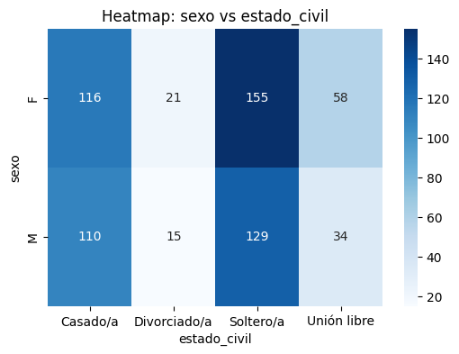
Chi-cuadrado: 3.8114, p-value=0.2826, grados libertad=3
Cramer's V: 0.0773
======================================================================
Análisis entre: ciudad y nivel_educativo
Tabla de contingencia:
nivel_educativo Posgrado Secundaria Técnico Universitario
ciudad
Barranquilla 13 50 39 42
Bogotá 29 96 68 76
Cali 22 56 41 52
Cartagena 15 31 26 23
Medellín 24 64 43 42
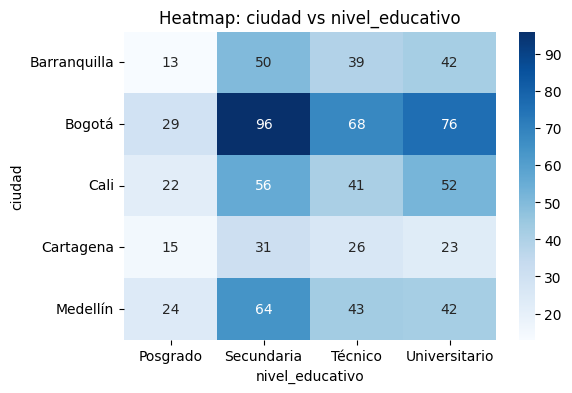
Chi-cuadrado: 5.9554, p-value=0.9183, grados libertad=12
Cramer's V: 0.0483
======================================================================
Análisis entre: ciudad y segmento
Tabla de contingencia:
segmento A B C
ciudad
Barranquilla 31 80 24
Bogotá 54 138 51
Cali 41 85 27
Cartagena 19 47 12
Medellín 40 83 28
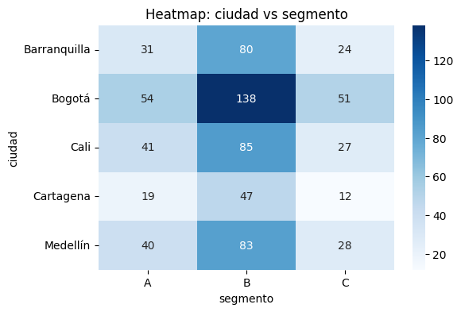
Chi-cuadrado: 2.9463, p-value=0.9377, grados libertad=8
Cramer's V: 0.0440
======================================================================
Análisis entre: ciudad y estado_civil
Tabla de contingencia:
estado_civil Casado/a Divorciado/a Soltero/a Unión libre
ciudad
Barranquilla 30 5 57 12
Bogotá 75 14 84 32
Cali 41 6 52 16
Cartagena 22 4 34 7
Medellín 51 6 50 18
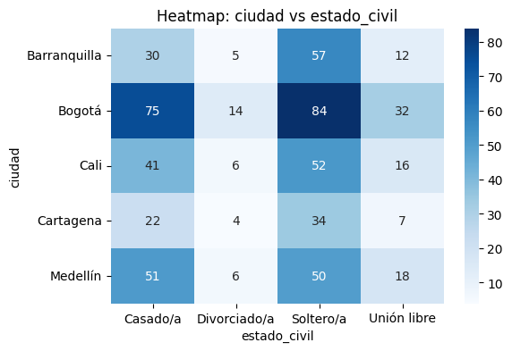
Chi-cuadrado: 8.9266, p-value=0.7092, grados libertad=12
Cramer's V: 0.0695
======================================================================
Análisis entre: nivel_educativo y segmento
Tabla de contingencia:
segmento A B C
nivel_educativo
Posgrado 17 50 18
Secundaria 55 158 39
Técnico 40 111 34
Universitario 57 98 42
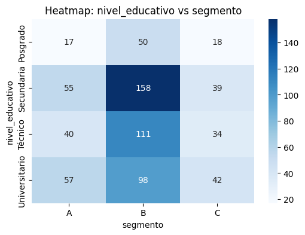
Chi-cuadrado: 9.3300, p-value=0.1559, grados libertad=6
Cramer's V: 0.0805
======================================================================
Análisis entre: nivel_educativo y estado_civil
Tabla de contingencia:
estado_civil Casado/a Divorciado/a Soltero/a Unión libre
nivel_educativo
Posgrado 27 4 28 16
Secundaria 70 13 95 30
Técnico 58 7 60 16
Universitario 61 10 77 22
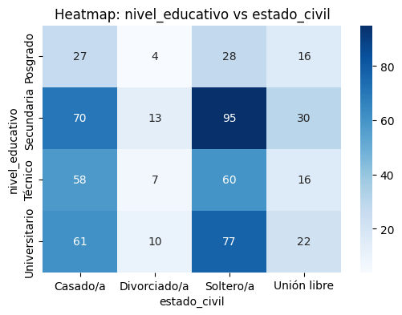
Chi-cuadrado: 6.3126, p-value=0.7083, grados libertad=9
Cramer's V: 0.0595
======================================================================
Análisis entre: segmento y estado_civil
Tabla de contingencia:
estado_civil Casado/a Divorciado/a Soltero/a Unión libre
segmento
A 42 8 61 18
B 103 15 134 50
C 43 4 39 9
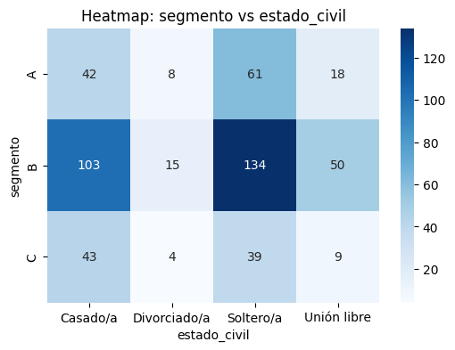
Chi-cuadrado: 6.4736, p-value=0.3723, grados libertad=6
Cramer's V: 0.0784
Podemos analizar que la mayoria de variables tienen p-valores mas grandes que 0.05 siendo sexo-nivel_educativo, aunque debido su valor bajo en la matriz de cramer las diferencias existen pero no seran determinantes. Debido a esto no hay evidencias que las variables categoricas se relacionen de manera fuerte entre si, a excepcion de sexo-nivel educativo, que aunque su relacion sea debil merece ser tomada en cuenta para los analisis posteriores
realizamos el analisis bivariado entre categoricas y numericas
bivariado_cat_num_all(df)
=== Análisis entre sexo (categórica) y edad (numérica) ===
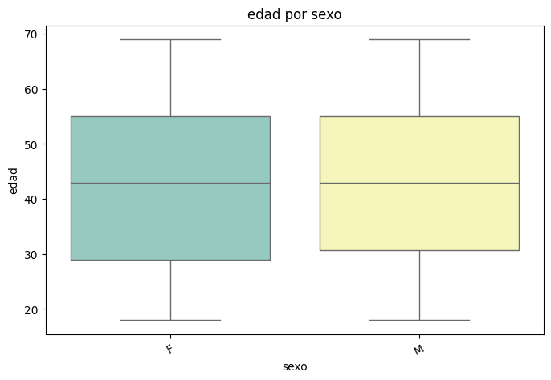
=== Análisis entre sexo (categórica) y altura_cm (numérica) ===
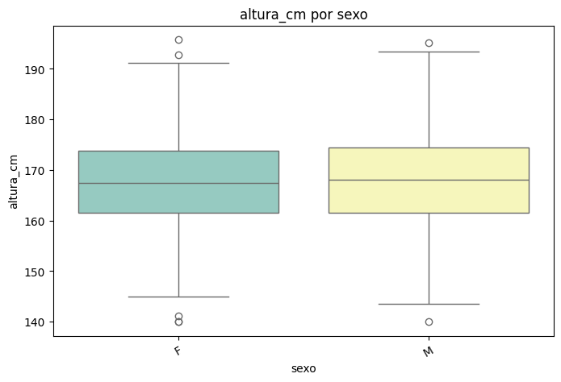
=== Análisis entre sexo (categórica) y ingresos (numérica) ===
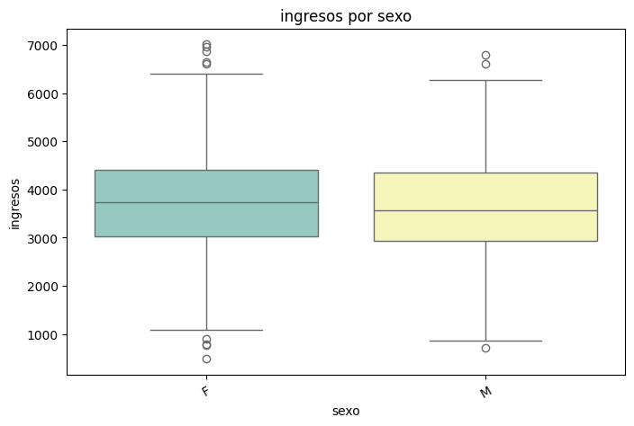
=== Análisis entre sexo (categórica) y gasto_mensual (numérica) ===
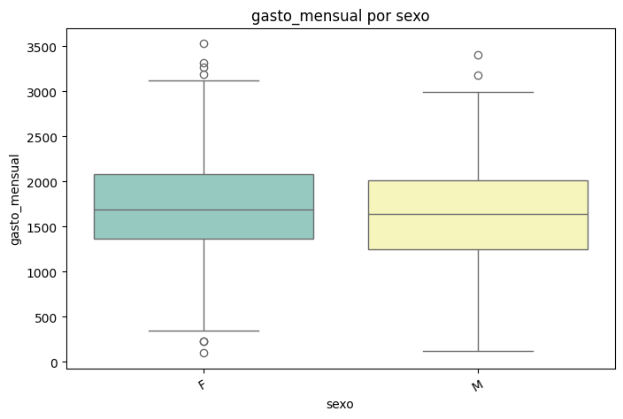
=== Análisis entre sexo (categórica) y puntuacion_credito (numérica) ===
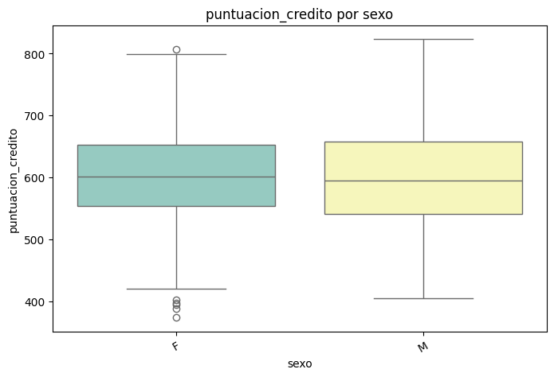
=== Análisis entre sexo (categórica) y demanda (numérica) ===
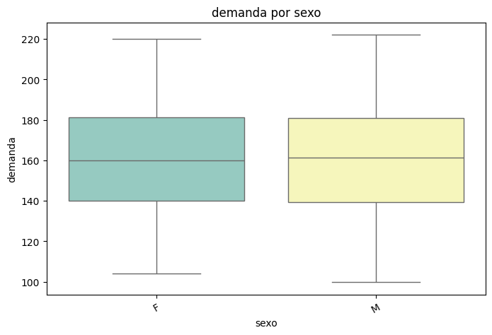
=== Análisis entre ciudad (categórica) y edad (numérica) ===
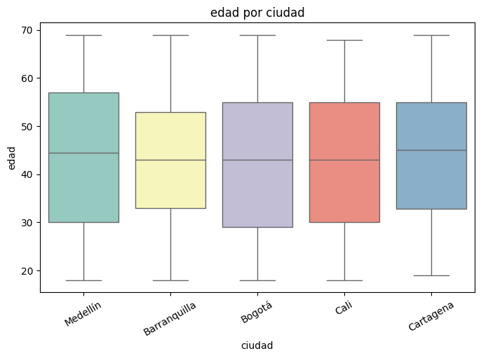
=== Análisis entre ciudad (categórica) y altura_cm (numérica) ===
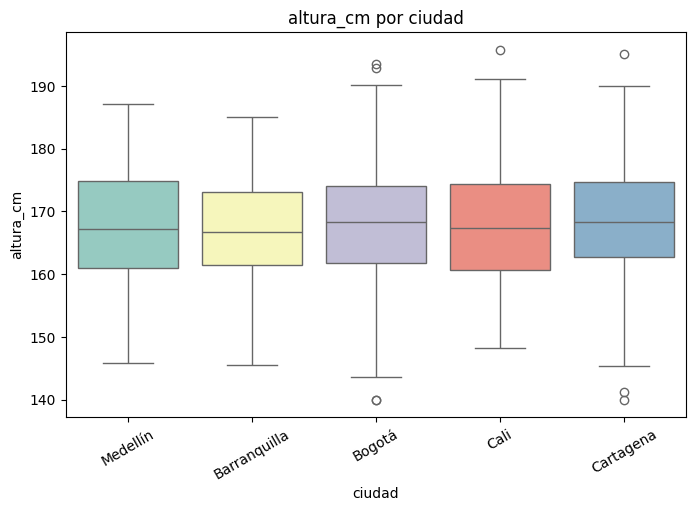
=== Análisis entre ciudad (categórica) y ingresos (numérica) ===
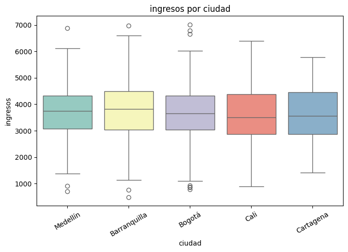
=== Análisis entre ciudad (categórica) y gasto_mensual (numérica) ===
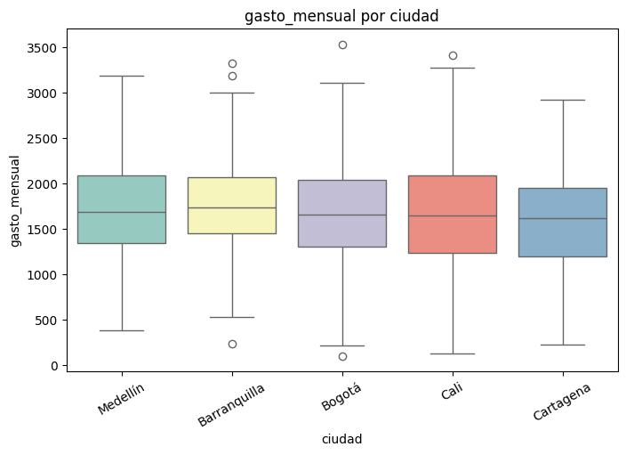
=== Análisis entre ciudad (categórica) y puntuacion_credito (numérica) ===
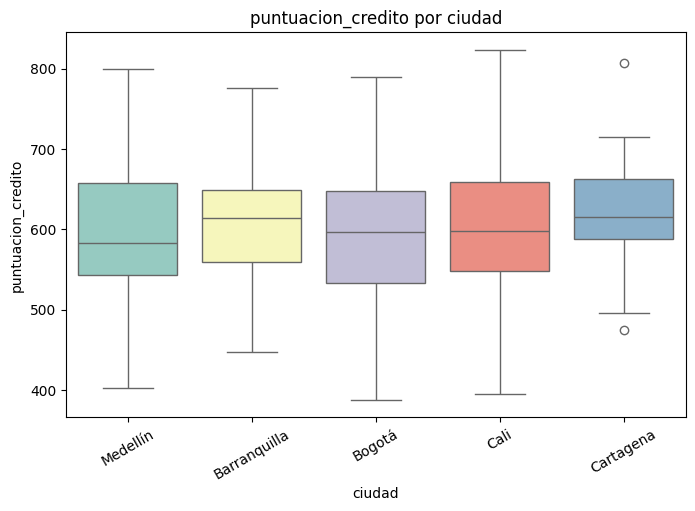
=== Análisis entre ciudad (categórica) y demanda (numérica) ===
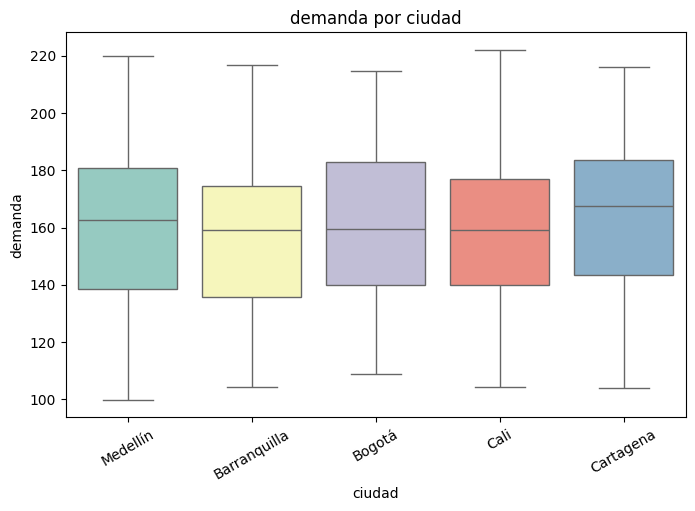
=== Análisis entre nivel_educativo (categórica) y edad (numérica) ===
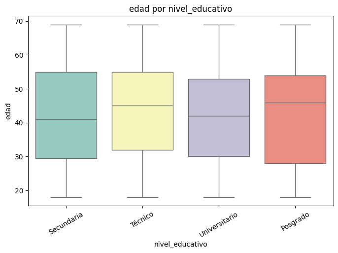
=== Análisis entre nivel_educativo (categórica) y altura_cm (numérica) ===
=== Análisis entre nivel_educativo (categórica) y ingresos (numérica) ===
=== Análisis entre nivel_educativo (categórica) y gasto_mensual (numérica) ===
=== Análisis entre nivel_educativo (categórica) y puntuacion_credito (numérica) ===
=== Análisis entre nivel_educativo (categórica) y demanda (numérica) ===
=== Análisis entre segmento (categórica) y edad (numérica) ===
=== Análisis entre segmento (categórica) y altura_cm (numérica) ===
=== Análisis entre segmento (categórica) y ingresos (numérica) ===
=== Análisis entre segmento (categórica) y gasto_mensual (numérica) ===
=== Análisis entre segmento (categórica) y puntuacion_credito (numérica) ===
=== Análisis entre segmento (categórica) y demanda (numérica) ===
=== Análisis entre estado_civil (categórica) y edad (numérica) ===
=== Análisis entre estado_civil (categórica) y altura_cm (numérica) ===
=== Análisis entre estado_civil (categórica) y ingresos (numérica) ===
=== Análisis entre estado_civil (categórica) y gasto_mensual (numérica) ===
=== Análisis entre estado_civil (categórica) y puntuacion_credito (numérica) ===
=== Análisis entre estado_civil (categórica) y demanda (numérica) ===
| Categorica | Numerica | Prueba | Estadístico | p-value | |
|---|---|---|---|---|---|
| 0 | sexo | edad | Kruskal-Wallis | 0.390618 | 0.531975 |
| 1 | sexo | altura_cm | ANOVA | 1.213307 | 0.270973 |
| 2 | sexo | ingresos | ANOVA | 0.670721 | 0.413027 |
| 3 | sexo | gasto_mensual | ANOVA | 2.882864 | 0.089952 |
| 4 | sexo | puntuacion_credito | ANOVA | 0.024374 | 0.876002 |
| 5 | sexo | demanda | Kruskal-Wallis | 0.002729 | 0.958339 |
| 6 | ciudad | edad | Kruskal-Wallis | 1.623363 | 0.804587 |
| 7 | ciudad | altura_cm | ANOVA | 0.558467 | 0.692889 |
| 8 | ciudad | ingresos | ANOVA | 0.509376 | 0.728870 |
| 9 | ciudad | gasto_mensual | ANOVA | 1.071772 | 0.369408 |
| 10 | ciudad | puntuacion_credito | ANOVA | 1.552493 | 0.185930 |
| 11 | ciudad | demanda | Kruskal-Wallis | 4.640442 | 0.326218 |
| 12 | nivel_educativo | edad | Kruskal-Wallis | 3.791363 | 0.284892 |
| 13 | nivel_educativo | altura_cm | ANOVA | 0.865205 | 0.458700 |
| 14 | nivel_educativo | ingresos | Kruskal-Wallis | 2.216654 | 0.528676 |
| 15 | nivel_educativo | gasto_mensual | ANOVA | 2.159559 | 0.091557 |
| 16 | nivel_educativo | puntuacion_credito | ANOVA | 0.126889 | 0.944153 |
| 17 | nivel_educativo | demanda | Kruskal-Wallis | 3.323023 | 0.344451 |
| 18 | segmento | edad | Kruskal-Wallis | 0.195741 | 0.906766 |
| 19 | segmento | altura_cm | ANOVA | 1.310462 | 0.270329 |
| 20 | segmento | ingresos | ANOVA | 4.344196 | 0.013330 |
| 21 | segmento | gasto_mensual | ANOVA | 0.797865 | 0.450774 |
| 22 | segmento | puntuacion_credito | ANOVA | 1.235776 | 0.291722 |
| 23 | segmento | demanda | Kruskal-Wallis | 5.029276 | 0.080892 |
| 24 | estado_civil | edad | Kruskal-Wallis | 6.170018 | 0.103625 |
| 25 | estado_civil | altura_cm | ANOVA | 1.262589 | 0.286355 |
| 26 | estado_civil | ingresos | ANOVA | 0.602849 | 0.613359 |
| 27 | estado_civil | gasto_mensual | Kruskal-Wallis | 2.470297 | 0.480683 |
| 28 | estado_civil | puntuacion_credito | Kruskal-Wallis | 7.233605 | 0.064813 |
| 29 | estado_civil | demanda | Kruskal-Wallis | 0.835237 | 0.841022 |
Podemos observar que en la mayoria de variables numericas no existe una asociacion estadisticamente significativa entre las variables del dataset, la unica relacion cuyo p-valor es menor que 0.05 y si es estadisticamente significativa es la de segmento e ingresos . Esto implica que el nivel de ingresos varía de manera importante entre los diferentes segmentos
Deteccion de valores faltantes#
Revisamos el porcentaje de nulos que tiene cada variable
total = len(df)
null_counts = df.isna().sum()
null_percent = (null_counts / total) * 100
missing_summary = pd.DataFrame({
"Nulos": null_counts,
"Porcentaje (%)": null_percent.round(2)
})
print("=== Resumen de valores nulos ===")
print(missing_summary)
=== Resumen de valores nulos ===
Nulos Porcentaje (%)
sexo 20 2.0
ciudad 50 5.0
nivel_educativo 100 10.0
segmento 200 20.0
estado_civil 350 35.0
edad 30 3.0
altura_cm 80 8.0
ingresos 120 12.0
gasto_mensual 250 25.0
puntuacion_credito 500 50.0
demanda 150 15.0
realizamos la grafica de los valores nulos utilizando un barplot y un heatmap
plt.figure(figsize=(10,7))
sns.barplot(x=missing_summary.index, y=missing_summary["Porcentaje (%)"], palette="viridis")
plt.title("Porcentaje de valores nulos por variable")
plt.ylabel("Porcentaje (%)")
plt.xlabel("Variable")
plt.xticks(rotation=45, ha='right')
plt.tight_layout()
plt.figure(figsize=(12,6))
sns.heatmap(df.isnull(), cbar=False, cmap="viridis")
plt.title("Mapa de calor de valores faltantes")
plt.xlabel("Columnas")
plt.ylabel("Filas")
plt.show()
Podemos observar que la puntuacion de credito es la variable que mas tiene NA con un 50% de faltantes y otras 3 variables tambien tienen valores mayores al 20%. Estas variables se analizaran con mas cuidado mas adelante para determinar si se pueden imputar o no
Clasificacion de faltantes#
Con los patrones observados en el EDA, se van a clasificar los tipos de datos faltantes de cada una de las variables y una breve explicacion del porque estan en cada categoria
MCAR: edad, altura_cm,sexo
Explicacion: estas variables no tienen una relacion muy significativa con el resto de las variables y son las que sus NA mas pueden deberse debido al azar
MAR: ingresos, gasto mensual, nivel educativo,ciudad,segmento,demanda
Explicacion: estas variables son las que tienen una relacion mas significativa con respecto a las otras variables por lo que hay que tomar eso en cuenta a la hora de imputar
MNAR: puntuacion de credito, estado civil
Explicacion: estas son las variables con la mayor cantidad de NA, ademas no tienen una relacion fuerte con las otras variables y son las mas probables de tener valores faltantes porque no fueron observados. Imputar estas variables no seria tan seguro si se hace directamente
Discusion de imputabilidad#
Se analizara variable por variable para determinar cual seria el mejor metodo de imputacion a realizar para cada uno
Sexo:
Tiene bajo porcentaje de NA(2%)
sus faltantes son aleatorios(MCAR)
la variable es categorica
Metodo de imputacion: Moda
Ciudad
bajo porcentaje de NA(5%)
sus faltantes pueden estar relacionados a otras variables
La variable es categorica
Metodo de imputacion: Hot-deck
Nivel educativo
porcentaje de NA(10%)
sus faltantes estan relacionados con otras variables
La variable es categorica
Metodo de imputacion: Hot-deck
Segmento
porcentaje de NA(20%)
porcentaje relacionado con otras variables
La variable es categorica
Metodo de imputacion: Hot-deck
Estado civil
porcentaje de NA(35%)
datos faltantes tipo MNAR
La variable es categorica
Metodo de imputacion: no se imputa directamente, tratamos los faltantes como categoria “missing”
Edad
bajo porcentaje de NA(3%)
datos faltantes aleatorios
La variable es numerica
Metodo de imputacion: Mediana(variable no normal)
Altura_cm
bajo porcentaje de NA(8%)
datos faltantes aleatorios
La variable es numerica
Metodo de imputacion: Media
Ingresos
porcentaje de NA(12%)
datos faltantes relacionados con otras variables
La variable es numerica
Metodo de imputacion: Regresion o KNN
Gasto_mensual
porcentaje de NA(25%)
datos faltantes relacionados con otras variables
La variable es numerica
Metodo de imputacion: KNN o MICE
Puntuacion_credito
porcentaje de NA(50%)
datos faltantes tipo MNAR
La variable es numerica
Metodo de imputacion: no se imputa directamente, como tiene 50% se va a eliminar del dataset porque no podemos imputarla con ninguna tecnica salvo por modelos predictivos avanzados
Demanda
porcentaje de NA(15%)
datos faltantes relacionados a otras variables
La variable es numerica
Metodo de imputacion: KNN
Representacion y Evaluacion de la Imputacion#
se realizaran las diferentes imputaciones y sus respectivas evaluaciones para determinar si cambian la dsitribucion de las variables de manera significativa
Antes de realizar la imputacion se van a evaluar la normalidad de las variables numericas
prueba_normalidad(df)
| variable | n_muestras | shapiro_p | dagostino_p | ks_p | es_normal (alpha=0.05) | |
|---|---|---|---|---|---|---|
| 1 | altura_cm | 920 | 5.915049e-01 | 7.946680e-01 | 0.725425 | True |
| 2 | ingresos | 880 | 3.243902e-01 | 6.173557e-01 | 0.899760 | True |
| 3 | gasto_mensual | 750 | 6.746288e-01 | 8.791065e-01 | 0.961382 | True |
| 4 | puntuacion_credito | 500 | 9.408124e-01 | 9.651871e-01 | 0.997282 | True |
| 0 | edad | 970 | 1.133051e-15 | 9.628678e-93 | 0.000063 | False |
| 5 | demanda | 850 | 1.129299e-07 | 1.958694e-19 | 0.025404 | False |
Podemos analizar que la variable edad y la variable demanda no siguen una distribucion normal a diferencia del resto de variables que si siguen normalidad. Esto se tomara en cuenta mas adelante a la hora de revisar si hubo cambio en la distribucion despues de imputar.
eliminamos puntuacion_credito del dataset por ser demasiado riesgosa de imputar
df=df.drop(columns='puntuacion_credito')
Imputacion por Media/Mediana#
imp_media = SimpleImputer(strategy="mean")
df_media = df.copy()
df_media[["altura_cm"]] = imp_media.fit_transform(df_media[["altura_cm"]])
print("\n Datos imputados con la MEDIA")
print(df_media.head(10))
Datos imputados con la MEDIA
sexo ciudad nivel_educativo segmento estado_civil edad altura_cm \
0 F Medellín NaN B Unión libre 19.0 161.821754
1 F Barranquilla NaN B NaN 52.0 167.819566
2 M Bogotá Secundaria B Soltero/a 38.0 165.756219
3 F Bogotá NaN B Casado/a 57.0 160.642670
4 M Cali Técnico B Soltero/a 67.0 151.402909
5 M Barranquilla Universitario NaN NaN 46.0 167.760096
6 F Cali NaN C NaN 60.0 175.137932
7 M Bogotá Universitario A Unión libre 59.0 164.865325
8 NaN Bogotá Secundaria C NaN 55.0 180.519374
9 F Barranquilla Técnico B Soltero/a 53.0 165.684648
ingresos gasto_mensual demanda
0 3574.753806 1832.731832 119.202995
1 3163.626815 NaN 124.457874
2 2765.672259 1219.535074 NaN
3 4320.397345 1908.324816 129.426792
4 NaN 1887.385697 133.916319
5 5455.272957 2408.441765 122.642679
6 2769.800963 464.616215 128.250629
7 5075.966681 2529.546803 125.662780
8 4544.179791 2135.615650 NaN
9 5968.280833 2600.299853 124.178138
imp_median = SimpleImputer(strategy="median")
df_mediana = df.copy()
df_mediana[["edad"]] = imp_median.fit_transform(df_mediana[["edad"]])
print("\n Datos imputados con la MEDIANA")
print(df_mediana.head(10))
Datos imputados con la MEDIANA
sexo ciudad nivel_educativo segmento estado_civil edad altura_cm \
0 F Medellín NaN B Unión libre 19.0 161.821754
1 F Barranquilla NaN B NaN 52.0 167.819566
2 M Bogotá Secundaria B Soltero/a 38.0 165.756219
3 F Bogotá NaN B Casado/a 57.0 160.642670
4 M Cali Técnico B Soltero/a 67.0 151.402909
5 M Barranquilla Universitario NaN NaN 46.0 NaN
6 F Cali NaN C NaN 60.0 175.137932
7 M Bogotá Universitario A Unión libre 59.0 164.865325
8 NaN Bogotá Secundaria C NaN 55.0 180.519374
9 F Barranquilla Técnico B Soltero/a 53.0 165.684648
ingresos gasto_mensual demanda
0 3574.753806 1832.731832 119.202995
1 3163.626815 NaN 124.457874
2 2765.672259 1219.535074 NaN
3 4320.397345 1908.324816 129.426792
4 NaN 1887.385697 133.916319
5 5455.272957 2408.441765 122.642679
6 2769.800963 464.616215 128.250629
7 5075.966681 2529.546803 125.662780
8 4544.179791 2135.615650 NaN
9 5968.280833 2600.299853 124.178138
Se revisa los graficos para determinar si cambio la distribucion despues de imputar
print("\nNulos originales:\n", df.isna().sum().to_string())
print("\nNulos después de imputar con MEDIANA:\n", df_mediana.isna().sum().to_string())
Nulos originales:
sexo 20
ciudad 50
nivel_educativo 100
segmento 200
estado_civil 350
edad 30
altura_cm 80
ingresos 120
gasto_mensual 250
demanda 150
Nulos después de imputar con MEDIANA:
sexo 20
ciudad 50
nivel_educativo 100
segmento 200
estado_civil 350
edad 0
altura_cm 80
ingresos 120
gasto_mensual 250
demanda 150
print("\nNulos originales:\n", df.isna().sum().to_string())
print("\nNulos después de imputar con MEDIANA:\n", df_media.isna().sum().to_string())
Nulos originales:
sexo 20
ciudad 50
nivel_educativo 100
segmento 200
estado_civil 350
edad 30
altura_cm 80
ingresos 120
gasto_mensual 250
demanda 150
Nulos después de imputar con MEDIANA:
sexo 20
ciudad 50
nivel_educativo 100
segmento 200
estado_civil 350
edad 30
altura_cm 0
ingresos 120
gasto_mensual 250
demanda 150
comparar_histogramas(df, df_mediana, "edad", "mediana")
comparar_boxplots(df,df_mediana,'edad','mediana')
comparar_histogramas(df, df_media, "altura_cm", "media")
comparar_boxplots(df,df_media,'altura_cm','media')
Podemos observar que las distribuciones no cambiarion luego de realizar la imputacion
Revision de imputacion Media/Mediana#
variables=['edad','altura_cm']
print(" Prueba de normalidad (Shapiro-Wilk) ")
for var in variables:
for version, data in zip(["original", "media", "mediana"],
[df[var].dropna(), df_media[var], df_mediana[var]]):
stat, p = shapiro(data)
conclusion = "Normal" if p > 0.05 else "No normal"
print(f"{var} ({version}): W={stat:.3f}, p={p:.4f} → {conclusion}")
Prueba de normalidad (Shapiro-Wilk)
edad (original): W=0.960, p=0.0000 → No normal
edad (media): W=nan, p=1.0000 → Normal
edad (mediana): W=0.963, p=0.0000 → No normal
altura_cm (original): W=0.998, p=0.5915 → Normal
altura_cm (media): W=0.995, p=0.0045 → No normal
altura_cm (mediana): W=nan, p=1.0000 → Normal
La nomalidad no cambio al realizar la imputacion de la variable edad, pero si cambio al imputar altura por la media, esto se tomara en cuenta para el analisis posterior
como edad es de tipo no normal se evalua con KS y Mann-whitneyU, lo mismo con altura_cm luego de ser imputada por la media
alpha = 0.05
variables = ["edad", "altura_cm"]
print(" Prueba de igualdad de distribuciones \n")
for var in variables:
orig = df[var].dropna()
media = df_media[var]
mediana = df_mediana[var]
ks_media = ks_2samp(orig, media)
ks_mediana = ks_2samp(orig, mediana)
print(f"{var} (KS):")
if var =='altura_cm':
print(f" Original vs Media → D={ks_media.statistic:.3f}, p={ks_media.pvalue:.4f} → "
f"{'Distribuciones iguales' if ks_media.pvalue>alpha else 'Distribuciones diferentes'}")
mu_media = mannwhitneyu(orig, media, alternative="two-sided")
print(f"{var} (Mann–Whitney U):")
print(f" Original vs Media → U={mu_media.statistic:.1f}, p={mu_media.pvalue:.4f}")
else:
print(f" Original vs Mediana → D={ks_mediana.statistic:.3f}, p={ks_mediana.pvalue:.4f} → "
f"{'Distribuciones iguales' if ks_mediana.pvalue>alpha else 'Distribuciones diferentes'}")
mu_mediana = mannwhitneyu(orig, mediana, alternative="two-sided")
print(f"{var} (Mann–Whitney U):")
print(f" Original vs Mediana → U={mu_mediana.statistic:.1f}, p={mu_mediana.pvalue:.4f}")
print("-"*60)
Prueba de igualdad de distribuciones
edad (KS):
Original vs Mediana → D=0.015, p=0.9998 → Distribuciones iguales
edad (Mann–Whitney U):
Original vs Mediana → U=485075.0, p=0.9953
------------------------------------------------------------
altura_cm (KS):
Original vs Media → D=0.040, p=0.4079 → Distribuciones iguales
altura_cm (Mann–Whitney U):
Original vs Media → U=459840.0, p=0.9895
------------------------------------------------------------
Podemos observar que las distribuciones no cambiaron al realizar la imputacion con los resultados.Tambien se observa que los valores p en el KStest y Mann-withey-U son increiblemente grandes en las variables. Por lo tanto podemos concluir que la imputacion mantiene la distribucion y la media practicamente igual a los datos originales.
df_final = df_media.copy()
df_final['edad'] = df_mediana['edad']
Imputacion por moda#
imp_moda = SimpleImputer(strategy="most_frequent")
df_moda = df_final.copy()
df_moda[["sexo"]] = imp_moda.fit_transform(df_final[["sexo"]])
print("\n Datos imputados con la Moda")
print(df_moda.head(10))
Datos imputados con la Moda
sexo ciudad nivel_educativo segmento estado_civil edad altura_cm \
0 F Medellín NaN B Unión libre 19.0 161.821754
1 F Barranquilla NaN B NaN 52.0 167.819566
2 M Bogotá Secundaria B Soltero/a 38.0 165.756219
3 F Bogotá NaN B Casado/a 57.0 160.642670
4 M Cali Técnico B Soltero/a 67.0 151.402909
5 M Barranquilla Universitario NaN NaN 46.0 167.760096
6 F Cali NaN C NaN 60.0 175.137932
7 M Bogotá Universitario A Unión libre 59.0 164.865325
8 F Bogotá Secundaria C NaN 55.0 180.519374
9 F Barranquilla Técnico B Soltero/a 53.0 165.684648
ingresos gasto_mensual demanda
0 3574.753806 1832.731832 119.202995
1 3163.626815 NaN 124.457874
2 2765.672259 1219.535074 NaN
3 4320.397345 1908.324816 129.426792
4 NaN 1887.385697 133.916319
5 5455.272957 2408.441765 122.642679
6 2769.800963 464.616215 128.250629
7 5075.966681 2529.546803 125.662780
8 4544.179791 2135.615650 NaN
9 5968.280833 2600.299853 124.178138
print("\nNulos originales:\n", df.isna().sum().to_string())
print("\nNulos después de imputar con MODA:\n", df_moda.isna().sum().to_string())
Nulos originales:
sexo 20
ciudad 50
nivel_educativo 100
segmento 200
estado_civil 350
edad 30
altura_cm 80
ingresos 120
gasto_mensual 250
demanda 150
Nulos después de imputar con MODA:
sexo 0
ciudad 50
nivel_educativo 100
segmento 200
estado_civil 350
edad 0
altura_cm 0
ingresos 120
gasto_mensual 250
demanda 150
fig, axes = plt.subplots(1, 2, figsize=(12, 5), sharey=True)
sns.countplot(x=df['sexo'], ax=axes[0], palette="pastel")
axes[0].set_title(f"{'sexo'} - Antes de imputar")
axes[0].set_ylabel("Frecuencia")
sns.countplot(x=df_moda['sexo'], ax=axes[1], palette="muted")
axes[1].set_title(f"{'sexo'} - Después de imputar (moda)")
axes[1].set_ylabel("Frecuencia")
plt.suptitle(f"Comparación de distribución en {'sexo'}", fontsize=14, weight="bold")
plt.show()
Podemos observar que no hubo un cambio significativo despues de imputar por la Moda
Revision de Imputacion Moda#
orig_counts = df['sexo'].value_counts().sort_index()
imp_counts = df_moda['sexo'].value_counts().sort_index()
orig_counts, imp_counts = orig_counts.align(imp_counts, fill_value=0)
tabla = pd.DataFrame({"original": orig_counts, "imputada": imp_counts}).T
chi2, p, dof, expected = chi2_contingency(tabla)
print(f"=== {var} ===")
print("Proporciones antes:\n", (orig_counts / orig_counts.sum()).round(3))
print("Proporciones después:\n", (imp_counts / imp_counts.sum()).round(3))
print(f"Chi2 = {chi2:.3f}, gl = {dof}, p = {p:.4f} → ",
"No se rechaza H0 (distribuciones iguales)" if p > 0.05 else "Se rechaza H0 (distribuciones diferentes)")
print("-"*60)
=== altura_cm ===
Proporciones antes:
sexo
F 0.529
M 0.471
Name: count, dtype: float64
Proporciones después:
sexo
F 0.538
M 0.462
Name: count, dtype: float64
Chi2 = 0.141, gl = 1, p = 0.7074 → No se rechaza H0 (distribuciones iguales)
------------------------------------------------------------
Podemos observar que las distribucion entre la variables categoricas se mantienen incluso despues de la imputacion, y el metodo de chi2 dio mayor que 0.05, teniendo 0.70. por lo que podemos afirmar que no cambia la distribucion de las variable sexo cuando se aplica la imputacion por MODA
df_final['sexo']=df_moda['sexo']
Imputacion por KNN numericas#
num_knn=['gasto_mensual','demanda']
knn = KNNImputer(n_neighbors=5, weights="distance")
df_knn = df_final.copy()
df_knn[num_knn] = knn.fit_transform(df_knn[num_knn])
print("Nulos antes:\n", df[num_knn].isna().sum())
print("\nNulos después (KNN):\n", df_knn[num_knn].isna().sum())
Nulos antes:
gasto_mensual 250
demanda 150
dtype: int64
Nulos después (KNN):
gasto_mensual 0
demanda 0
dtype: int64
sns.set(style="darkgrid", font_scale=1.05)
for col in num_knn:
base = df[col].dropna()
after = df_knn[col]
bins = np.histogram_bin_edges(np.concatenate([base.values, after.values]), bins="auto")
fig, axes = plt.subplots(1, 2, figsize=(12, 5), sharey=True)
axes[0].hist(base, bins=bins, alpha=0.7)
axes[0].set_title(f"{col} - Antes (sin NaN)")
axes[0].set_ylabel("Frecuencia")
axes[1].hist(after, bins=bins, alpha=0.7)
axes[1].set_title(f"{col} - Después (KNN)")
plt.suptitle(f"Histograma comparativo: {col}", fontsize=14, weight="bold")
plt.tight_layout()
plt.show()
sns.set(style="darkgrid", font_scale=1.05)
for col in num_knn:
base = df[col].dropna()
after = df_knn[col]
fig, axes = plt.subplots(1, 2, figsize=(12, 5), sharey=True)
# Boxplot antes
sns.boxplot(y=base, ax=axes[0])
axes[0].set_title(f"{col} - Antes (sin NaN)")
axes[0].set_ylabel(col)
# Boxplot después
sns.boxplot(y=after, ax=axes[1])
axes[1].set_title(f"{col} - Después (KNN)")
plt.suptitle(f"Boxplot comparativo: {col}", fontsize=14, weight="bold")
plt.tight_layout()
plt.show()
Podemos observar que la distribucion en ambos casos se volvio un poco mas centrada que antes en comparacion a como estaban antes las 2 variables pero su forma general se mantiene. Esto es esperado de KNN
Revision de Imputacion por KNN(numericas)#
alpha = 0.05
res = []
def cohens_d(x, y):
x, y = np.asarray(x), np.asarray(y)
sx2, sy2 = x.var(ddof=1), y.var(ddof=1)
n1, n2 = len(x), len(y)
sp = np.sqrt(((n1-1)*sx2 + (n2-1)*sy2)/(n1+n2-2)) if (n1+n2-2)>0 else np.nan
return (x.mean()-y.mean())/sp if sp>0 else np.nan
def rank_biserial_from_u(u, n1, n2):
return 1 - (2*u)/(n1*n2)
print("\n Evaluación analítica ")
for col in num_knn:
x = df[col].dropna().values
y = df_knn[col].values
sh_x = shapiro(x) if len(x) >= 3 else None
sh_y = shapiro(y) if len(y) >= 3 else None
normal_x = (sh_x is not None) and (sh_x.pvalue > alpha)
normal_y = (sh_y is not None) and (sh_y.pvalue > alpha)
ks = ks_2samp(x, y)
if normal_x and normal_y:
tt = ttest_ind(x, y, equal_var=False)
eff = cohens_d(x, y)
test_name = "t de Student (Welch)"
stat = tt.statistic; p = tt.pvalue; eff_name = "Cohen d"
else:
mu = mannwhitneyu(x, y, alternative="two-sided")
eff = rank_biserial_from_u(mu.statistic, len(x), len(y))
test_name = "Mann–Whitney U"
stat = mu.statistic; p = mu.pvalue; eff_name = "r biserial"
print(f"\n--- {col} ---")
if sh_x is not None and sh_y is not None:
print(f"Shapiro original: W={sh_x.statistic:.3f}, p={sh_x.pvalue:.4f} -> {'Normal' if normal_x else 'No normal'}")
print(f"Shapiro KNN : W={sh_y.statistic:.3f}, p={sh_y.pvalue:.4f} -> {'Normal' if normal_y else 'No normal'}")
print(f"KS (orig vs KNN): D={ks.statistic:.3f}, p={ks.pvalue:.4f} -> "
f"{'Distribuciones iguales' if ks.pvalue>alpha else 'Distribuciones diferentes'}")
print(f"{test_name}: stat={stat:.3f}, p={p:.4f} -> "
f"{'Sin diferencia' if p>alpha else 'Diferencia significativa'}")
print(f"Tamaño de efecto ({eff_name}) = {eff:.3f}")
res.append({
"variable": col,
"KS_p": ks.pvalue,
"test": test_name,
"p_media_rangos": p,
"effect_metric": eff_name,
"effect_size": eff
})
pd.DataFrame(res)
Evaluación analítica
--- gasto_mensual ---
Shapiro original: W=0.998, p=0.6746 -> Normal
Shapiro KNN : W=0.995, p=0.0015 -> No normal
KS (orig vs KNN): D=0.038, p=0.5434 -> Distribuciones iguales
Mann–Whitney U: stat=374228.000, p=0.9412 -> Sin diferencia
Tamaño de efecto (r biserial) = 0.002
--- demanda ---
Shapiro original: W=0.985, p=0.0000 -> No normal
Shapiro KNN : W=0.992, p=0.0000 -> No normal
KS (orig vs KNN): D=0.034, p=0.6406 -> Distribuciones iguales
Mann–Whitney U: stat=426338.000, p=0.9070 -> Sin diferencia
Tamaño de efecto (r biserial) = -0.003
| variable | KS_p | test | p_media_rangos | effect_metric | effect_size | |
|---|---|---|---|---|---|---|
| 0 | gasto_mensual | 0.543384 | Mann–Whitney U | 0.941210 | r biserial | 0.002059 |
| 1 | demanda | 0.640569 | Mann–Whitney U | 0.907012 | r biserial | -0.003148 |
Si bien la normalidad de la variable gasto_mensual cambio analizando las otras metricas, podemos observar que la distribucion se mantiene debido a los resultados del KStest Mann-withney y r-biseral por lo que KNN no cambia la distribucion de la variable gasto mensual.
En contraste la variable demanda si mantiene su distribucion y su no normalidad con resultados similares en los test realizados.
df_final['gasto_mensual'] = df_knn['gasto_mensual']
df_final['demanda']=df_knn['demanda']
Imputacion por HotDeck#
df_hot=df_final.copy()
df_hot['ciudad_imp'] = hot_deck_group(df_hot, col='ciudad', group='sexo')
df_hot["ciudad_imp"] = df_hot["ciudad_imp"].astype("category")
df_hot["ciudad_imp"] = df_hot["ciudad_imp"].cat.set_categories(df_hot["ciudad_imp"].dropna().unique())
df_hot['nivel_educativo_imp'] = hot_deck_group(df_hot, col='nivel_educativo', group='sexo')
df_hot["nivel_educativo_imp"] = df_hot["nivel_educativo_imp"].astype("category")
df_hot["nivel_educativo_imp"] = df_hot["nivel_educativo_imp"].cat.set_categories(df_hot["nivel_educativo_imp"].dropna().unique())
print("\nNulos originales:\n", df.isna().sum().to_string())
print("\nNulos después de imputar con hotdeck:\n", df_hot.isna().sum().to_string())
Nulos originales:
sexo 20
ciudad 50
nivel_educativo 100
segmento 200
estado_civil 350
edad 30
altura_cm 80
ingresos 120
gasto_mensual 250
demanda 150
Nulos después de imputar con hotdeck:
sexo 0
ciudad 50
nivel_educativo 100
segmento 200
estado_civil 350
edad 0
altura_cm 0
ingresos 120
gasto_mensual 0
demanda 0
ciudad_imp 0
nivel_educativo_imp 0
var = ['ciudad','nivel_educativo']
for var in var:
fig, axes = plt.subplots(1, 2, figsize=(12, 5), sharey=True)
sns.countplot(
x=df_hot[var],
ax=axes[0],
palette="pastel",
order=df_hot[var].dropna().unique()
)
axes[0].set_title(f"{var} - Antes de imputar")
axes[0].set_ylabel("Frecuencia")
sns.countplot(
x=df_hot[f"{var}_imp"],
ax=axes[1],
palette="muted",
order=df_hot[var].dropna().unique() # se ordena con base en el original
)
axes[1].set_title(f"{var} - Después de imputar (Hot-deck)")
axes[1].set_ylabel("Frecuencia")
plt.suptitle(f"Comparación de distribución en {var}", fontsize=14, weight="bold")
plt.tight_layout(rect=[0, 0.03, 1, 0.95]) # Ajusta el espacio para el título
plt.show()
Swe observa que las imputaciones por Hot-deck no realizaron un cambio significativo a las proporciones de las categorias de nivel_educativo y ciudad
Revision de imputacion por HotDeck#
var = ['ciudad','nivel_educativo']
for var in var:
# === Comparación numérica (Chi² + Cramér’s V) ===
orig_counts = df_hot[var].value_counts().sort_index()
imp_counts = df_hot[f"{var}_imp"].value_counts().sort_index()
orig_counts, imp_counts = orig_counts.align(imp_counts, fill_value=0)
# Tabla cruzada
ct = pd.DataFrame({"original": orig_counts, "imputada": imp_counts})
# Aplicar chi²
chi2, p, dof, exp = chi2_contingency(ct.T)
v = cramers_v_imp(ct.T) # Asegúrate de tener definida cramers_v_imp
# Resultados
print(f"=== {var} ===")
print("Proporciones antes:\n", (orig_counts / orig_counts.sum()).round(3))
print("Proporciones después:\n", (imp_counts / imp_counts.sum()).round(3))
print(f"Chi² = {chi2:.3f}, gl = {dof}, p = {p:.4f} → ",
"No se rechaza H₀ (distribuciones iguales)" if p > 0.05 else "Se rechaza H₀ (distribuciones diferentes)")
print(f"Cramér's V = {v:.3f} (≈0: muy similar; 0.1: pequeño; 0.3: mediano; 0.5: grande)")
print("-" * 60)
=== ciudad ===
Proporciones antes:
ciudad
Barranquilla 0.169
Bogotá 0.323
Cali 0.199
Cartagena 0.106
Medellín 0.202
Name: count, dtype: float64
Proporciones después:
ciudad_imp
Barranquilla 0.171
Bogotá 0.320
Cali 0.204
Cartagena 0.105
Medellín 0.200
Name: count, dtype: float64
Chi² = 0.102, gl = 4, p = 0.9987 → No se rechaza H₀ (distribuciones iguales)
Cramér's V = 0.007 (≈0: muy similar; 0.1: pequeño; 0.3: mediano; 0.5: grande)
------------------------------------------------------------
=== nivel_educativo ===
Proporciones antes:
nivel_educativo
Posgrado 0.120
Secundaria 0.352
Técnico 0.249
Universitario 0.279
Name: count, dtype: float64
Proporciones después:
nivel_educativo_imp
Posgrado 0.122
Secundaria 0.353
Técnico 0.251
Universitario 0.274
Name: count, dtype: float64
Chi² = 0.066, gl = 3, p = 0.9956 → No se rechaza H₀ (distribuciones iguales)
Cramér's V = 0.006 (≈0: muy similar; 0.1: pequeño; 0.3: mediano; 0.5: grande)
------------------------------------------------------------
Podemos observar que la imputacion por Hotdeck no altero significativamente la distribucion de la variable ciudad, Tanto el p-valor (0.9996) como Cramér’s V (0.005) indican que las distribuciones son prácticamente idénticas. Lo mismo ocurre con la variable de nivel educativo que con un pvalor de 0.9956 y cramer de 0.006 nos dice lo mismo. Por lo que el metodo de imputacion fue adecuado para este caso.
df_hot=df_hot.drop(columns=['ciudad','nivel_educativo'])
df_final['ciudad']=df_hot['ciudad_imp']
df_final['nivel_educativo']=df_hot['nivel_educativo_imp']
Imputacion Hotdeck segmento#
se utilizara Hotdeck para imputar segmento tomando la variable ciudad imputada por Hotdeck
df_hot['segmento_imp'] = hot_deck_group(df_hot, col='segmento', group='ciudad_imp')
df_hot["segmento_imp"] = df_hot["segmento_imp"].astype("category")
df_hot["segmento_imp"] = df_hot["segmento_imp"].cat.set_categories(df_hot["segmento_imp"].dropna().unique())
print("\nNulos originales:\n", df.isna().sum().to_string())
print("\nNulos después de imputar con hotdeck:\n", df_hot.isna().sum().to_string())
Nulos originales:
sexo 20
ciudad 50
nivel_educativo 100
segmento 200
estado_civil 350
edad 30
altura_cm 80
ingresos 120
gasto_mensual 250
demanda 150
Nulos después de imputar con hotdeck:
sexo 0
segmento 200
estado_civil 350
edad 0
altura_cm 0
ingresos 120
gasto_mensual 0
demanda 0
ciudad_imp 0
nivel_educativo_imp 0
segmento_imp 0
fig, axes = plt.subplots(1, 2, figsize=(12, 5), sharey=True)
sns.countplot(
x=df_hot['segmento'],
ax=axes[0],
palette="pastel",
order=df_hot['segmento'].dropna().unique()
)
axes[0].set_title(f"{'segmento'} - Antes de imputar")
axes[0].set_ylabel("Frecuencia")
sns.countplot(
x=df_hot[f"{'segmento'}_imp"],
ax=axes[1],
palette="muted",
order=df_hot['segmento'].dropna().unique() # se ordena con base en el original
)
axes[1].set_title(f"{'segmento'} - Después de imputar (Hot-deck)")
axes[1].set_ylabel("Frecuencia")
plt.suptitle(f"Comparación de distribución en {'segmento'}", fontsize=14, weight="bold")
plt.tight_layout(rect=[0, 0.03, 1, 0.95]) # Ajusta el espacio para el título
plt.show()
Podemos observar que la distribucion de las categorias se mantiene despues de realizar la imputacion por Hotdeck
Revision de imputacion Hotdeck-segmento#
orig_counts = df_hot['segmento'].value_counts().sort_index()
imp_counts = df_hot[f"{'segmento'}_imp"].value_counts().sort_index()
orig_counts, imp_counts = orig_counts.align(imp_counts, fill_value=0)
ct = pd.DataFrame({"original": orig_counts, "imputada": imp_counts})
chi2, p, dof, exp = chi2_contingency(ct.T)
v = cramers_v_imp(ct.T)
print(f"=== {'segmento'} ===")
print("Proporciones antes:\n", (orig_counts / orig_counts.sum()).round(3))
print("Proporciones después:\n", (imp_counts / imp_counts.sum()).round(3))
print(f"Chi² = {chi2:.3f}, gl = {dof}, p = {p:.4f} → ",
"No se rechaza H₀ (distribuciones iguales)" if p > 0.05 else "Se rechaza H₀ (distribuciones diferentes)")
print(f"Cramér's V = {v:.3f} (≈0: muy similar; 0.1: pequeño; 0.3: mediano; 0.5: grande)")
print("-" * 60)
=== segmento ===
Proporciones antes:
segmento
A 0.242
B 0.571
C 0.186
Name: count, dtype: float64
Proporciones después:
segmento_imp
A 0.244
B 0.573
C 0.183
Name: count, dtype: float64
Chi² = 0.032, gl = 2, p = 0.9842 → No se rechaza H₀ (distribuciones iguales)
Cramér's V = 0.004 (≈0: muy similar; 0.1: pequeño; 0.3: mediano; 0.5: grande)
------------------------------------------------------------
Podemos observar que con un p-valor del 0.98% no se rechaza la Ho de el chi-cuadrado por lo tanto las disitribuciones antes y despues de imputar son iguales
df_final['segmento']=df_hot['segmento_imp']
Imputacion por regresion#
df_reg = df_final.copy()
X = pd.get_dummies(df_reg[["edad", "nivel_educativo", "ciudad","gasto_mensual"]],
drop_first=True)
y = df_reg["ingresos"]
mask_train = y.notna()
model = LinearRegression()
model.fit(X[mask_train], y[mask_train])
LinearRegression()In a Jupyter environment, please rerun this cell to show the HTML representation or trust the notebook.
On GitHub, the HTML representation is unable to render, please try loading this page with nbviewer.org.
LinearRegression()
mask_pred = y.isna()
y_pred = model.predict(X[mask_pred])
df_reg.loc[mask_pred, "ingresos"] = y_pred
nulos_antes = df["ingresos"].isna().sum()
pct_antes = (nulos_antes / len(df)) * 100
print(f"Nulos en 'ingresos' ANTES de imputar: {nulos_antes} ({pct_antes:.2f}%)")
nulos_despues = df_reg["ingresos"].isna().sum()
pct_despues = (nulos_despues / len(df_reg)) * 100
print(f"Nulos en 'ingresos' DESPUÉS de imputar: {nulos_despues} ({pct_despues:.2f}%)")
Nulos en 'ingresos' ANTES de imputar: 120 (12.00%)
Nulos en 'ingresos' DESPUÉS de imputar: 0 (0.00%)
print("\nNulos originales:\n", df.isna().sum().to_string())
print("\nNulos después de imputar con regresion:\n", df_reg.isna().sum().to_string())
Nulos originales:
sexo 20
ciudad 50
nivel_educativo 100
segmento 200
estado_civil 350
edad 30
altura_cm 80
ingresos 120
gasto_mensual 250
demanda 150
Nulos después de imputar con regresion:
sexo 0
ciudad 0
nivel_educativo 0
segmento 0
estado_civil 350
edad 0
altura_cm 0
ingresos 0
gasto_mensual 0
demanda 0
col = "ingresos"
base = df[col].dropna()
after = df_reg[col]
bins = np.histogram_bin_edges(np.concatenate([base.values, after.values]), bins="auto")
fig, axes = plt.subplots(1, 2, figsize=(12, 5), sharey=True)
axes[0].hist(base, bins=bins, alpha=0.7, color="skyblue")
axes[0].set_title(f"{col} - Antes (sin NaN)")
axes[0].set_ylabel("Frecuencia")
axes[1].hist(after, bins=bins, alpha=0.7, color="salmon")
axes[1].set_title(f"{col} - Después (Regresión)")
plt.suptitle(f"Histograma comparativo: {col}", fontsize=14, weight="bold")
plt.tight_layout()
plt.show()
fig, axes = plt.subplots(1, 2, figsize=(12, 5), sharey=True)
sns.boxplot(y=base, ax=axes[0], color="skyblue")
axes[0].set_title(f"{col} - Antes (sin NaN)")
axes[0].set_ylabel(col)
sns.boxplot(y=after, ax=axes[1], color="salmon")
axes[1].set_title(f"{col} - Después (Regresión)")
plt.suptitle(f"Boxplot comparativo: {col}", fontsize=14, weight="bold")
plt.tight_layout()
plt.show()
Podemos observar que la distribucion se mantiene en ingresos despues de imputar, algunos valores mas altos que otros debido a que la imputacion hizo a la distribucion mas uniforme
Revision de Imputacion de Regresion#
alpha = 0.05
x = base.values
y_new = after.values
sh_x = shapiro(x)
sh_y = shapiro(y_new)
normal_x = sh_x.pvalue > alpha
normal_y = sh_y.pvalue > alpha
print(f"Shapiro original: W={sh_x.statistic:.3f}, p={sh_x.pvalue:.4f} -> {'Normal' if normal_x else 'No normal'}")
print(f"Shapiro imputado: W={sh_y.statistic:.3f}, p={sh_y.pvalue:.4f} -> {'Normal' if normal_y else 'No normal'}")
ks = ks_2samp(x, y_new)
print(f"KS: D={ks.statistic:.3f}, p={ks.pvalue:.4f} -> {'Distribuciones iguales' if ks.pvalue>alpha else 'Distribuciones diferentes'}")
if normal_x and normal_y:
tt = ttest_ind(x, y_new, equal_var=False)
print(f"T de Student (Welch): t={tt.statistic:.3f}, p={tt.pvalue:.4f} -> "
f"{'Sin diferencia' if tt.pvalue>alpha else 'Diferencia significativa'}")
else:
mu = mannwhitneyu(x, y_new, alternative="two-sided")
print(f"Mann–Whitney U: U={mu.statistic:.3f}, p={mu.pvalue:.4f} -> "
f"{'Sin diferencia' if mu.pvalue>alpha else 'Diferencia significativa'}")
Shapiro original: W=0.998, p=0.3244 -> Normal
Shapiro imputado: W=0.998, p=0.2108 -> Normal
KS: D=0.013, p=1.0000 -> Distribuciones iguales
T de Student (Welch): t=0.283, p=0.7771 -> Sin diferencia
Podemos observar que el p-valor de shapiro wilk sigue siendo mayor que 0.05 por lo que la variable sigue siendo normal, y el pvalor de Ks test dio un valor bastante alto por lo que las distribuciones son iguales en ambos casos y con un p-valor de 0.81 en el t-student de welch no hubo un cambio significativo en las medias. Por lo tanto la distribucion se mantuvo luego de la imputacion
df_final['ingresos']=df_reg['ingresos']
Variables sin imputar#
Debido a que las variables de estado civil y puntacion credito tienen un porcentaje muy alto de NA, se decidio que no se debian imputar, en su lugar se les asigna una categoria missing a la variable estado_civil y se elimino la variable puntuacion_credito
df_final['estado_civil_imp']=df_final['estado_civil'].fillna('missing')
print("\nNulos originales:\n", df.isna().sum().to_string())
print("\nNulos después de agregar la categoria missing:\n", df_final.isna().sum().to_string())
Nulos originales:
sexo 20
ciudad 50
nivel_educativo 100
segmento 200
estado_civil 350
edad 30
altura_cm 80
ingresos 120
gasto_mensual 250
demanda 150
Nulos después de agregar la categoria missing:
sexo 0
ciudad 0
nivel_educativo 0
segmento 0
estado_civil 350
edad 0
altura_cm 0
ingresos 0
gasto_mensual 0
demanda 0
estado_civil_imp 0
revisamos los graficos para saber si cambio la distribucion de ambas variables al hacer el cambio
fig, ax = plt.subplots(1, 2, figsize=(12,5))
sns.countplot(x=df['estado_civil'], ax=ax[0], color="skyblue")
ax[0].set_title("Estado civil (Original)")
sns.countplot(x=df_final['estado_civil_imp'], ax=ax[1], color="orange")
ax[1].set_title("Estado civil (Imputado)")
plt.show()
Podemos observar que la distribucion de las categorias se mantenian igual pero la categoria missing al añadirse la categoria missing cambia la proporcion que tenian las otras categorias de estado civil
Evaluacion de estado civil#
orig_counts = df_final['estado_civil'].value_counts().sort_index()
imp_counts = df_final[f"{'estado_civil'}_imp"].value_counts().sort_index()
orig_counts, imp_counts = orig_counts.align(imp_counts, fill_value=0)
ct = pd.DataFrame({"original": orig_counts, "imputada": imp_counts})
chi2, p, dof, exp = chi2_contingency(ct.T)
v = cramers_v_imp(ct.T)
print(f"=== {'sestado_civil'} ===")
print("Proporciones antes:\n", (orig_counts / orig_counts.sum()).round(3))
print("Proporciones después:\n", (imp_counts / imp_counts.sum()).round(3))
print(f"Chi² = {chi2:.3f}, gl = {dof}, p = {p:.4f} → ",
"No se rechaza H₀ (distribuciones iguales)" if p > 0.05 else "Se rechaza H₀ (distribuciones diferentes)")
print(f"Cramér's V = {v:.3f} (≈0: muy similar; 0.1: pequeño; 0.3: mediano; 0.5: grande)")
print("-" * 60)
=== sestado_civil ===
Proporciones antes:
Casado/a 0.355
Divorciado/a 0.055
Soltero/a 0.446
Unión libre 0.143
missing 0.000
Name: count, dtype: float64
Proporciones después:
Casado/a 0.231
Divorciado/a 0.036
Soltero/a 0.290
Unión libre 0.093
missing 0.350
Name: count, dtype: float64
Chi² = 288.750, gl = 4, p = 0.0000 → Se rechaza H₀ (distribuciones diferentes)
Cramér's V = 0.418 (≈0: muy similar; 0.1: pequeño; 0.3: mediano; 0.5: grande)
------------------------------------------------------------
Podemos observar que si se realiza esto el p-valor se vuelve menor que 0.05 por lo que se rechaza la hipotesis nula. tambien que el valor de cramer es mediano. Por lo tanto cambia la distribucion de la variable al agregar la categoria missing
Conclusiones preliminares#
La imputacion fue efectiva principalmente en las variables con faltantes Tipo MCAR ya que estos eran los que se podian imputar mas facilmente a traves de la Media, Mediana o Moda, para el resto de variables se tuvieron que utilizar imputacion mas avanzadas
El caso más crítico corresponde a puntuacion_credito, con un 50% de valores faltantes. Aquí la imputación resultó poco confiable, al punto de no poder realizarse adecuadamente. Debido al alto nivel de NA en la variable, la imputacion puede introducir sesgos que podrian afectarla de manera significativa por lo que esta variable debe ser considerada con cuidado
En conclusion, se realizaron diferentes metodos para realizar la imputacion de datos faltantes de un dataset con diferentes porcentajes de NA en los cuales se pudo observar como cada metodo podia o no podia alterar la distribucion de la variable. Examinando las imputaciones de manera tanto grafica como numerica se logro llegar a un mejor entendimiento del funcionamiento de cada uno de los metodos y como se podrian aplicar en casos reales
Variable |
% Nulos |
Tipo de ausencia |
Método sugerido de imputación |
Evidencia de preservación de la distribución |
|---|---|---|---|---|
edad |
3% |
MCAR |
Mediana (no normal) |
Se mantiene la distribución (Mann–Whitney y KS mayor que 0.05) y normalidad |
altura_cm |
8% |
MCAR |
Media (normal) |
Se mantiene la distribución (Mann-Whitney y KS mayor que 0.05) pero no la normalidad |
ingresos |
12% |
MAR |
KNN Imputer o regresión |
Mantuvo la distribucion(t_test y KS mayor que 0.05) y la normalidad |
demanda |
15% |
MAR |
Métodos robustos (KNN, MICE). |
Mantiene la distribucion y su falta de normalidad |
gasto_mensual |
25% |
MAR |
Imputación multivariada (MICE, KNN) |
Mantiene su distribucion(Mann-Whitney y KS mayor que 0.05) pero no su normalidad |
puntuacion_credito |
50% |
MNAR |
Imputación múltiple avanzada o categoría especial; considerar eliminar |
Alta pérdida de información, no se pudo validar preservación |
sexo |
2% |
MCAR |
Moda |
La distribucion se mantiene(p-valor alto) |
ciudad |
5% |
MAR |
Hot-deck |
La distribucion se mantiene(p-valor alto) |
nivel_educativo |
10% |
MAR |
Hot-deck |
La distribucion se mantiene(p-valor alto) |
segmento |
20% |
MAR |
Hot-deck |
La distribucion se mantiene(p-valor alto) |
estado_civil |
35% |
MNAR |
Modelo supervisado o nueva categoría “desconocido” |
Alto riesgo de sesgo, imputación incierta |